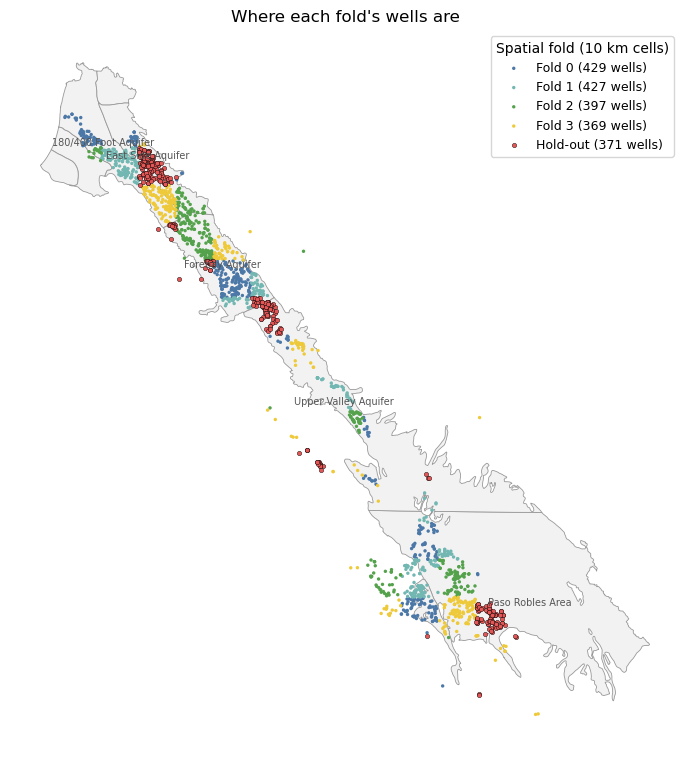
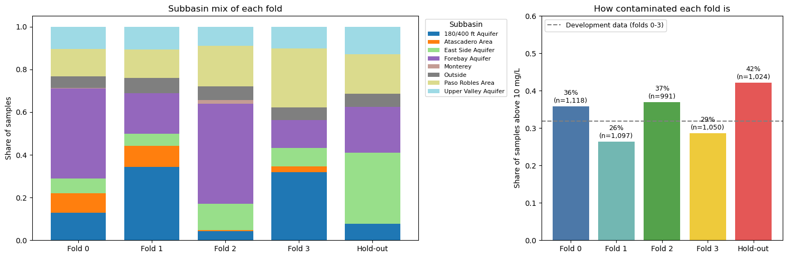
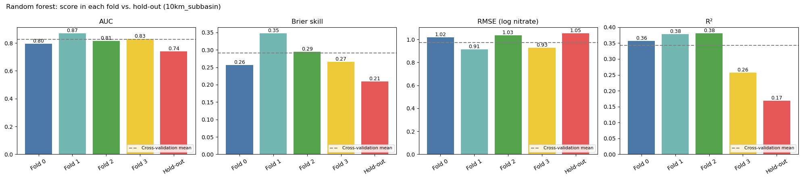
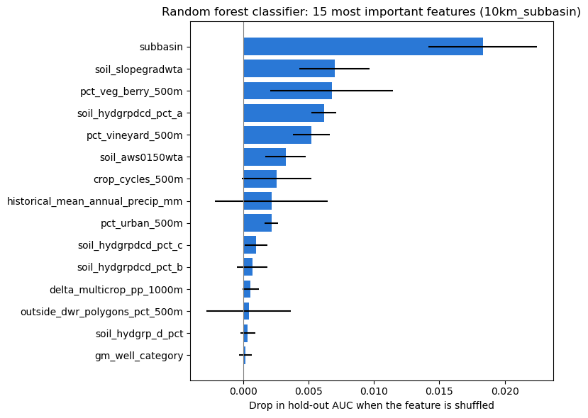

Objective: Evaluate the selected models once on the hold-out fold (fold 4), which no model, tuning step or threshold choice has used. These are the numbers to report as final performance.
Selected models (best mean over folds 0–3 in classification_models.ipynb and regression_models.ipynb, configuration 10km_subbasin with subbasin features): - Classification (exceeds 10 mg/L): random forest (AUC 0.827, Brier skill 0.291), with the dummy baseline for reference. - Regression (log nitrate): random forest (RMSE 0.973, R² 0.343), with the dummy baseline for reference.
Procedure 1. Each final model is tuned and fit on all development data (folds 0–3), with exactly the same settings and search as in the model notebooks. 2. The classification threshold is fixed before looking at the hold-out: by default, the threshold with the best F1 on the out-of-fold predictions of folds 0–3. 3. Each model predicts fold 4 once; scores are compared with the cross-validation results.
Rule: run the final evaluation only once, after the team agrees on the models and the threshold. Keep RUN_FINAL_EVALUATION = False until then: the notebook performs a dry run that treats fold 3 as a stand-in test set (training on folds 0–2), so the code can be checked without touching fold 4.
Code
import sysfrom pathlib import Path# Make src importable from any notebook folder (identical in every notebook)sys.path.insert(0, str(next(p for p in [Path.cwd(), *Path.cwd().parents] if (p /"src").is_dir())))from src import pathsROOT = paths.ROOTimport joblibimport numpy as npimport pandas as pdimport matplotlib.pyplot as pltfrom sklearn.dummy import DummyClassifier, DummyRegressorfrom sklearn.ensemble import RandomForestClassifier, RandomForestRegressorfrom sklearn.calibration import calibration_curvefrom sklearn.metrics import (RocCurveDisplay, PrecisionRecallDisplay, ConfusionMatrixDisplay, roc_auc_score, average_precision_score, brier_score_loss, precision_score, recall_score, f1_score, root_mean_squared_error, r2_score)from src.features.preprocessing import load_model_datafrom src.evaluation.make_splits import load_splitfrom src.evaluation.results_log import load_runsfrom src.models.evaluate import tuned, all_features, predictions_path
0. Settings
Code
RUN_FINAL_EVALUATION =True# True only once, after the team agrees on models and thresholdSPLIT, USE_SUBBASIN ="10km_subbasin", TrueTHRESHOLD_MG_L =10THRESHOLD =0.4# agreed by the team; best F1 on folds 0-3 out-of-fold predictions is 0.35-0.37# Same grids and searches as classification_models.ipynb and regression_models.ipynbRF_GRID = {"max_depth": [6, 8, 11, 15, None],"max_features": ["sqrt", 0.3, 0.5],"min_samples_leaf": [1, 5, 20],}CLASSIFIERS = {"Dummy (prior)": lambda: DummyClassifier(strategy="prior"),"Random forest": lambda: tuned(RandomForestClassifier(n_estimators=300, random_state=0, n_jobs=1), RF_GRID, "neg_brier_score", n_iter=10),}REGRESSORS = {"Dummy (mean)": lambda: DummyRegressor(strategy="mean"),"Random forest": lambda: tuned(RandomForestRegressor(n_estimators=300, random_state=0, n_jobs=1), RF_GRID, "neg_root_mean_squared_error", n_iter=10),}OUT_DIR = paths.FIGURES["final"]MODEL_DIR = paths.MODELS # fitted models (large files, not tracked by Git)if RUN_FINAL_EVALUATION: OUT_DIR.mkdir(parents=True, exist_ok=True) MODEL_DIR.mkdir(parents=True, exist_ok=True)TAG ="holdout"if RUN_FINAL_EVALUATION else"dry_run"print("FINAL EVALUATION ON FOLD 4"if RUN_FINAL_EVALUATIONelse"DRY RUN: training on folds 0-2, testing on fold 3 (fold 4 is not used)")
FINAL EVALUATION ON FOLD 4
1. Data
Development data = folds 0–3; hold-out = fold 4. In the dry run, fold 3 plays the role of the hold-out.
Code
X, y, meta = load_model_data(subbasin=USE_SUBBASIN, drop_elevation=USE_SUBBASIN)FEATURES =list(X.columns)data = load_split(pd.concat([meta, X], axis=1).assign(log_nitrate=y), split=SPLIT)data["exceeds"] = (np.expm1(data["log_nitrate"]) > THRESHOLD_MG_L).astype(int)if RUN_FINAL_EVALUATION: train, test = data[~data["holdout"]], data[data["holdout"]]else: dev = data[~data["holdout"]] train, test = dev[dev["fold"] <3], dev[dev["fold"] ==3]train, test = train.reset_index(drop=True), test.reset_index(drop=True)print(f"Train: {len(train):,} samples, {train.gm_well_id.nunique():,} wells (folds {sorted(train.fold.unique())})")print(f"Test: {len(test):,} samples, {test.gm_well_id.nunique():,} wells (fold {sorted(test.fold.unique())}) | "f"{test.exceeds.mean():.0%} exceed {THRESHOLD_MG_L} mg/L")
Fixed by the team before the evaluation at 0.4: the thresholds that maximize F1 on the out-of-fold predictions of folds 0–3 are 0.35–0.37 for the random forest. A threshold below 0.5 catches more exceeding wells (higher recall) at the cost of more false alarms, which suits drinking-water screening, where missing a contaminated well is worse than an extra sample.
Code
if THRESHOLD isNone: oof = pd.read_csv(predictions_path("classification", SPLIT, USE_SUBBASIN)) candidates = np.round(np.arange(0.05, 0.951, 0.01), 2) f1 = [f1_score(oof["exceeds"], (oof["Random forest"] >= t).astype(int)) for t in candidates] THRESHOLD =float(candidates[int(np.argmax(f1))])print(f"Threshold chosen on folds 0-3 out-of-fold predictions: {THRESHOLD:.2f} (F1 = {max(f1):.3f})")else:print(f"Threshold set by hand: {THRESHOLD:.2f}")
Threshold set by hand: 0.40
3. Fit the final models and predict the test fold
Searches are tuned inside the training folds only (one whole fold held out at a time), exactly as in the model notebooks.
Code
def fit(make_model, target): model = make_model() is_search =hasattr(model, "best_params_") orhasattr(model, "param_distributions") orhasattr(model, "param_grid") model.fit(train[FEATURES], train[target], **({"groups": train["fold"]} if is_search else {}))if is_search:print(f" best settings: {model.best_params_}")return modelfinal_models = {}class_probs, reg_preds = {}, {}for name, make_model in CLASSIFIERS.items():print(f"Classification - {name}") model = fit(make_model, "exceeds") class_probs[name] = model.predict_proba(test[FEATURES])[:, 1]if RUN_FINAL_EVALUATION and name =="Random forest": joblib.dump(model.best_estimator_, paths.FINAL_CLASSIFIER)if name =="Random forest": final_models["Random forest classifier"] = model.best_estimator_for name, make_model in REGRESSORS.items():print(f"Regression - {name}") model = fit(make_model, "log_nitrate") reg_preds[name] = model.predict(test[FEATURES])if RUN_FINAL_EVALUATION and name =="Random forest": joblib.dump(model.best_estimator_, paths.FINAL_REGRESSOR)if name =="Random forest": final_models["Random forest regressor"] = model.best_estimator_
Classification - Dummy (prior)
Classification - Random forest
best settings: {'min_samples_leaf': 5, 'max_features': 'sqrt', 'max_depth': 15}
Regression - Dummy (mean)
Regression - Random forest
best settings: {'min_samples_leaf': 5, 'max_features': 'sqrt', 'max_depth': 15}
4. Scores on the test fold, compared with cross-validation
Cross-validation columns are the mean over folds 0–3 from results/model_runs/ (same configuration). A test score close to the cross-validation mean means the model generalizes as expected to unseen areas.
5b. Why the hold-out differs: where each fold is, and how the model did in each
The folds are groups of 10 km grid cells, so each fold covers different parts of the valley. These figures show (1) where each fold’s wells are, (2) how much of each subbasin and how much contamination each fold contains, and (3) the random forest’s score in each cross-validation fold next to the hold-out. They describe the evaluation; nothing here changes the model.
Code
import geopandas as gpdfrom src.features.transformers import SUBBASIN_PATHsubbasin_cols = [c for c in FEATURES if c.startswith("subbasin_")]data["subbasin_name"] = (data[subbasin_cols].idxmax(axis=1).str.replace("subbasin_", "", regex=False) .str.title().str.replace("Foot", "ft", regex=False))data["fold_label"] = np.where(data["holdout"], "Hold-out", "Fold "+ data["fold"].astype(str))fold_order =sorted(data.loc[~data["holdout"], "fold_label"].unique()) + ["Hold-out"]fold_colors =dict(zip(fold_order, ["#4c78a8", "#72b7b2", "#54a24b", "#eeca3b", "#e45756"]))# 1. Map: one point per well, colored by foldwells = data.drop_duplicates("gm_well_id")wells = gpd.GeoDataFrame(wells, geometry=gpd.points_from_xy(wells.gm_longitude, wells.gm_latitude), crs=4326).to_crs(3310)subbasins = gpd.read_file(SUBBASIN_PATH).to_crs(3310)fig, ax = plt.subplots(figsize=(7, 9))subbasins.plot(ax=ax, facecolor="#f2f2f2", edgecolor="#999999", linewidth=0.6)for label in fold_order: sub = wells[wells["fold_label"] == label] ax.scatter(sub.geometry.x, sub.geometry.y, s=10if label =="Hold-out"else6, color=fold_colors[label], label=f"{label} ({len(sub):,} wells)", edgecolor="black"if label =="Hold-out"else"none", linewidth=0.3)for _, row in subbasins[subbasins.area >150e6].iterrows(): # label the larger subbasins only point = row.geometry.representative_point() ax.annotate(str(row["Basin_Subbasin_Name"]).split(" - ")[-1].title(), (point.x, point.y), fontsize=7, color="#555555", ha="center")ax.set_aspect("equal")ax.axis("off")ax.legend(loc="upper right", fontsize=9, title="Spatial fold (10 km cells)")ax.set_title("Where each fold's wells are")plt.tight_layout()if RUN_FINAL_EVALUATION: plt.savefig(OUT_DIR /"folds_map.png", dpi=150, bbox_inches="tight")plt.show()

Code
# 2. What each fold contains: subbasin mix and share of samples above 10 mg/Lcomposition = pd.crosstab(data["fold_label"], data["subbasin_name"], normalize="index").reindex(fold_order)exceedance = data.groupby("fold_label")["exceeds"].mean().reindex(fold_order)n_samples = data["fold_label"].value_counts().reindex(fold_order)fig, axs = plt.subplots(1, 2, figsize=(15, 5), gridspec_kw={"width_ratios": [1.6, 1]})composition.plot(kind="bar", stacked=True, ax=axs[0], colormap="tab20", width=0.75)axs[0].set(ylabel="Share of samples", xlabel="", title="Subbasin mix of each fold")axs[0].legend(bbox_to_anchor=(1.01, 1), loc="upper left", fontsize=8, title="Subbasin")axs[0].tick_params(axis="x", rotation=0)bars = axs[1].bar(fold_order, exceedance, color=[fold_colors[f] for f in fold_order])for bar, rate, n inzip(bars, exceedance, n_samples): axs[1].text(bar.get_x() + bar.get_width() /2, rate +0.01, f"{rate:.0%}\n(n={n:,})", ha="center", fontsize=9)axs[1].axhline(data.loc[~data["holdout"], "exceeds"].mean(), color="gray", linestyle="--", label="Development data (folds 0-3)")axs[1].set(ylabel=f"Share of samples above {THRESHOLD_MG_L} mg/L", ylim=(0, 0.6), title="How contaminated each fold is")axs[1].legend(loc="upper left", fontsize=9)plt.tight_layout()if RUN_FINAL_EVALUATION: plt.savefig(OUT_DIR /"folds_composition.png", dpi=150, bbox_inches="tight")plt.show()

Code
# 3. Random forest score in each cross-validation fold and in the hold-outrf_cv = runs[runs["model"] =="Random forest"].copy()rf_cv["fold_label"] ="Fold "+ rf_cv["fold"].astype(int).astype(str)holdout_scores = final_scores.set_index(["task", "model"]).loc[ [("classification", "Random forest"), ("regression", "Random forest")]]holdout_name ="Hold-out"if RUN_FINAL_EVALUATION else"Stand-in (dry run)"panels = [("classification", "auc", "AUC"), ("classification", "brier_skill", "Brier skill"), ("regression", "rmse_log", "RMSE (log nitrate)"), ("regression", "r2", "R²")]fig, axs = plt.subplots(1, 4, figsize=(20, 4.5))for ax, (task, metric, name) inzip(axs, panels): cv = rf_cv[rf_cv["task"] == task].sort_values("fold") labels =list(cv["fold_label"]) + [holdout_name] values =list(cv[metric]) + [holdout_scores.loc[(task, "Random forest"), metric]] colors = [fold_colors.get(l, "#999999") for l in cv["fold_label"]] + [fold_colors["Hold-out"]] bars = ax.bar(labels, values, color=colors)for bar, value inzip(bars, values): ax.text(bar.get_x() + bar.get_width() /2, value, f"{value:.2f}", ha="center", va="bottom", fontsize=9) ax.axhline(cv[metric].mean(), color="gray", linestyle="--", label="Cross-validation mean") ax.set_title(name) ax.tick_params(axis="x", rotation=30) ax.legend(fontsize=8, loc="lower right")fig.suptitle(f"Random forest: score in each fold vs. hold-out ({SPLIT})", x=0.01, ha="left")plt.tight_layout()if RUN_FINAL_EVALUATION: plt.savefig(OUT_DIR /"folds_performance.png", dpi=150, bbox_inches="tight")plt.show()

Code
# 4. Hold-out performance by subbasin (subbasins with at least 50 hold-out samples)test_named = test.merge(data[["gm_well_id", "gm_samp_collection_date", "subbasin_name"]].drop_duplicates(), on=["gm_well_id", "gm_samp_collection_date"], how="left")test_named["rf_probability"] = class_probs["Random forest"]test_named["rf_called"] = (test_named["rf_probability"] >= THRESHOLD).astype(int)rows = []for name, group in test_named.groupby("subbasin_name"):iflen(group) <50:continue both_classes = group["exceeds"].nunique() ==2 rows.append({"subbasin": name, "samples": len(group),"share_above_10": group["exceeds"].mean(),"auc": roc_auc_score(group["exceeds"], group["rf_probability"]) if both_classes else np.nan,"recall": recall_score(group["exceeds"], group["rf_called"], zero_division=0) if group["exceeds"].any() else np.nan,"mean_predicted": group["rf_probability"].mean(), })by_subbasin = pd.DataFrame(rows).sort_values("samples", ascending=False)display(by_subbasin.round(2))
subbasin
samples
share_above_10
auc
recall
mean_predicted
1
East Side Aquifer
341
0.64
0.58
0.87
0.55
2
Forebay Aquifer
220
0.45
0.57
0.69
0.48
4
Paso Robles Area
190
0.07
0.64
0.00
0.07
5
Upper Valley Aquifer
131
0.57
0.49
0.76
0.49
0
180/400 ft Aquifer
79
0.29
0.67
0.26
0.27
3
Outside
63
0.06
0.55
0.00
0.07
5c. Feature importance
How much the final random forest classifier relies on each feature: each feature is shuffled in the test fold and the drop in AUC is measured (permutation importance, 20 repeats). The subbasin indicator columns are shuffled together as one feature.
Code
from joblib import Parallel, delayed# Permutation importance: shuffle one feature (or one group of features) in the test fold and measure how much the hold-out AUC drops. A large drop means the model relies on that feature. The subbasin indicator columns are shuffled together, as one feature, since they describe one variable.N_REPEATS =20rf = final_models["Random forest classifier"]subbasin_cols = [f for f in FEATURES if f.startswith("subbasin_")]groups = {f: [f] for f in FEATURES if f notin subbasin_cols}if subbasin_cols: groups["subbasin"] = subbasin_colsX_test, y_test = test[FEATURES], test["exceeds"]base_auc = roc_auc_score(y_test, rf.predict_proba(X_test)[:, 1])def auc_drops(cols, seed):"""Drop in AUC for each of N_REPEATS shuffles of these columns (shuffled together).""" rng = np.random.default_rng(seed) drops = []for _ inrange(N_REPEATS): shuffled = X_test.copy() shuffled[cols] = shuffled[cols].to_numpy()[rng.permutation(len(shuffled))] drops.append(base_auc - roc_auc_score(y_test, rf.predict_proba(shuffled)[:, 1]))return drops# One feature per CPU core; each feature has its own seed, so the result does not depend on the number of coresresults = Parallel(n_jobs=-1)(delayed(auc_drops)(cols, seed) for seed, cols inenumerate(groups.values()))# Impurity importance (how much each feature's splits reduce impurity in training), for comparison;# it tends to favour continuous features, so the permutation result is the one to reportimpurity = pd.Series(rf.feature_importances_, index=FEATURES)if subbasin_cols: impurity["subbasin"] = impurity[subbasin_cols].sum()importance = (pd.DataFrame({"feature": list(groups),"auc_drop_mean": [np.mean(d) for d in results],"auc_drop_std": [np.std(d) for d in results]}).assign(impurity_importance=lambda d: d["feature"].map(impurity)).sort_values("auc_drop_mean", ascending=False).reset_index(drop=True))print(f"Hold-out AUC with no shuffling: {base_auc:.3f}")display(importance.head(15).round(4))INTERPRETABILITY = paths.FIGURES["interpretability"]INTERPRETABILITY.mkdir(parents=True, exist_ok=True)importance.to_csv(INTERPRETABILITY /f"permutation_importance_classifier_{TAG}.csv", index=False)top = importance.head(15).iloc[::-1]fig, ax = plt.subplots(figsize=(8, 6))ax.barh(top["feature"], top["auc_drop_mean"], xerr=top["auc_drop_std"], color="#2a78d6")ax.axvline(0, color="gray", linewidth=0.8)ax.set(xlabel="Drop in hold-out AUC when the feature is shuffled", title=f"Random forest classifier: 15 most important features ({SPLIT})")plt.tight_layout()plt.savefig(INTERPRETABILITY /f"permutation_importance_classifier_{TAG}.png", dpi=150, bbox_inches="tight")plt.show()
Hold-out AUC with no shuffling: 0.741
feature
auc_drop_mean
auc_drop_std
impurity_importance
0
subbasin
0.0183
0.0041
0.0698
1
soil_slopegradwta
0.0070
0.0027
0.0572
2
pct_veg_berry_500m
0.0068
0.0047
0.0696
3
soil_hydgrpdcd_pct_a
0.0062
0.0009
0.0246
4
pct_vineyard_500m
0.0052
0.0014
0.0237
5
soil_aws0150wta
0.0033
0.0015
0.0343
6
crop_cycles_500m
0.0026
0.0027
0.0528
7
historical_mean_annual_precip_mm
0.0022
0.0043
0.0627
8
pct_urban_500m
0.0022
0.0005
0.0117
9
soil_hydgrpdcd_pct_c
0.0010
0.0009
0.0250
10
soil_hydgrpdcd_pct_b
0.0007
0.0012
0.0230
11
delta_multicrop_pp_1000m
0.0006
0.0006
0.0129
12
outside_dwr_polygons_pct_500m
0.0004
0.0032
0.0385
13
soil_hydgrp_d_pct
0.0004
0.0006
0.0110
14
gm_well_category
0.0002
0.0005
0.0040

6. Conclusions
Classification (random forest): hold-out AUC = 0.741 (cross-validation 0.827, range 0.796–0.871 across folds), Brier skill = 0.209 (0.291). At the agreed threshold of 0.4, the model detects 74% of samples exceeding 10 mg/L (recall), and 59% of the samples it flags actually exceed the limit (precision); F1 = 0.654.
Regression (random forest): hold-out RMSE (log) = 1.053 vs. 1.237 for the dummy baseline, a 15% reduction (19% in cross-validation); R² = 0.170 (cross-validation 0.343).
Generalization: hold-out performance is lower than in cross-validation. The hold-out fold is a harder area: it contains about half of the East Side Aquifer samples, the most contaminated subbasin, and 42% of its samples exceed 10 mg/L versus 32% in the development data. The dummy regressor’s negative R² (−0.15) on the hold-out reflects this shift in nitrate levels. Relative to the baseline, the random forest still improves predictions by a similar margin as in cross-validation.
Caveats: a single hold-out fold covers a limited set of areas, so its score is more uncertain than the four-fold cross-validation mean; both should be reported. Performance applies to the Salinas Valley; transfer to other basins was not tested.
The fitted final models are saved in data/models/ (local) for the risk map notebook.